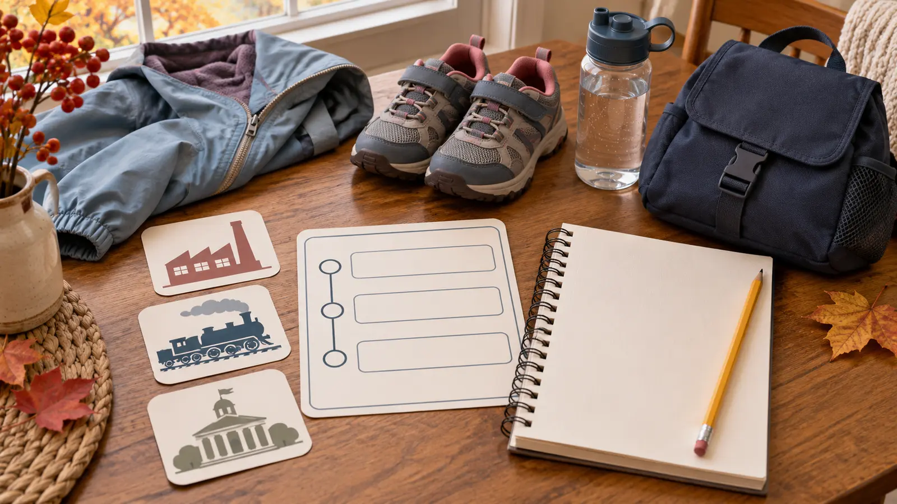

1. Start local
Use Onondaga County: The Heart of New York when available. Find one object connected to work, transport, neighborhood life or recreation.
SYRACUSE · INDOOR HISTORY · AUTHORITY-EXPANSION
This is not a “read every label” museum. Choose three exhibits, give each child one object to investigate, use the Curiosity Corner only if it is open, and leave while local history still feels local.

The Onondaga Historical Museum at 321 Montgomery Street is a compact downtown history stop, not an all-day children’s attraction. It works best for school-age kids who can look closely, listen to a short explanation and move on without touching. Plan 75 minutes. Pick three exhibits before arrival. Let each child choose one object, image or question. Then leave.
The separate November 7–8 “Family Weekend Ideas” page owns this weekend’s live event calendar. This guide is an evergreen museum system and does not compete with that roundup. Pair it with lunch or a short downtown walk only if the family still has energy.
The official downtown page reviewed November 8 listed museum and Gift Gallery hours of 10 a.m.–4 p.m. Wednesday through Saturday and 11 a.m.–4 p.m. Sunday, with Monday and Tuesday closures. It listed admission at $5 per person, free for children 12 and under and OHA members. It also said the Richard and Carolyn Wright Research Center was unavailable because of ongoing renovations.
Do not build a child’s visit around archival research, a specific document or the research center until OHA confirms current access. Reciprocal programs, military offers, member benefits and exhibit dates can have eligibility and seasonal rules. Price the actual household on the official page instead of carrying an old screenshot.
OHA recommends on-street parking on Fayette and Montgomery Streets on weekdays and links visitors to downtown parking information. Syracuse’s official parking page reviewed November 8 said pay-station hours were 9 a.m.–6 p.m. and most metered spaces had a two-hour limit, with exceptions. Signs, snow restrictions, events, construction, payment systems and limits control at the curb. Read the actual block before leaving the vehicle.
A 75-minute visit can fit inside many two-hour spaces, but arrival, walking and a slow exit consume that margin. Use an off-street facility when the posted limit, mobility needs or winter conditions make the meter a bad fit. Do not let a child wait alone while an adult moves the car.
The official page says the main entrance is on the left side of the building face and an ADA-accessible entrance is on the right; visitors should ring the bell for assistance. That statement does not guarantee a specific door width, elevator route, seating, accessible restroom feature, device availability or quiet room. Call OHA when any feature decides the trip.
Freedom Bound uses an immersive presentation with lights, images, voices, sounds and music. It addresses slavery, freedom seeking, abolitionism and anti-abolition. Preview the official page, tell the child what the subject is, and offer a real skip. Hearing protection may reduce sound but must not block adult instructions; confirm museum policy if needed. For a different cultural-history visit, use the Skä•noñh Center family plan.
The public pages reviewed did not publish a universal touch rule, photography rule, food policy, detailed restroom description or pet policy for this visit. Treat cases and objects as viewing-only unless a label or staff member explicitly invites interaction. Ask before photographing, especially around sensitive materials and other visitors. Do not bring an animal based on assumption; call about the current service-animal route or any other policy that matters.
Eat before or after unless OHA confirms a place for food. Carry necessary medication under adult control. Keep bottles closed and away from exhibits. For a broader museum-day routine, use the pick-three museum system.
Snow or ice: an indoor museum does not make the walk or drive safe. Check the National Weather Service and local road conditions, then postpone when the route is poor. Parking fails: use a lawful off-street option or leave; do not circle until everyone is angry. Exhibit is closed: switch to the local overview and one current temporary gallery. Hard-history overload: exit Freedom Bound immediately and choose a neutral object study. Low energy: one exhibit, one sketch, home. Museum unavailable: use the Erie Canal Museum plan only after checking its own current hours.
Skip when the child needs a guaranteed climbing or hands-on experience, the family cannot manage downtown parking and crossings today, a required access feature is unconfirmed, the subject matter is not a fit, or a 75-minute object-and-story museum will feel like school. The Syracuse outing picker compares three different local formats.
Reviewed November 8, 2026 using OHA’s official downtown visit page, current exhibit directory, and Freedom Bound description, plus the City of Syracuse parking rules. The three-exhibit route and 75-minute schedule are independent editorial tools, not museum policy or a claim about today’s gallery access. No affiliate or booking links are attached.
MAKE THE WEEK COUNT
Build the plan your family can finish well, then leave enough energy for the next part of the day.
More family plans